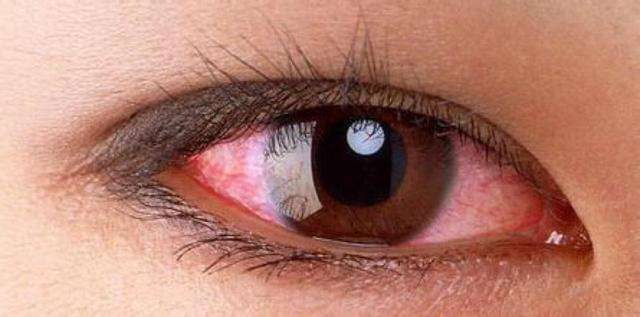
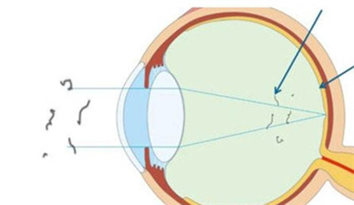
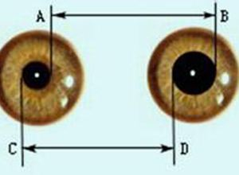
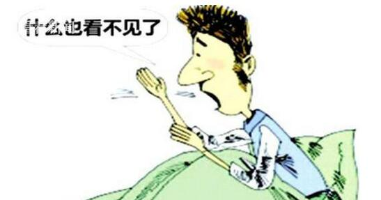
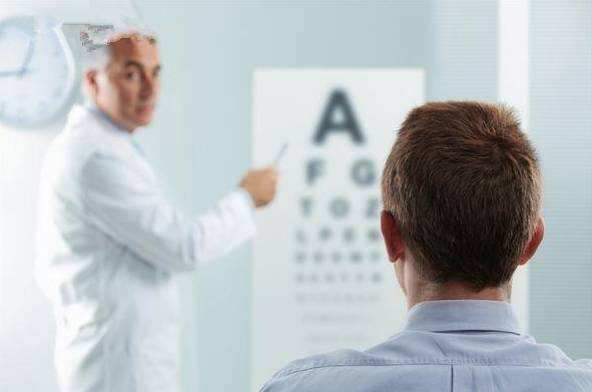

症状
耳鼻喉
腹部和消化系统
妇产科
脑和神经系统
口腔和牙科
皮肤和毛发
眼
胸部和呼吸系统
相关主题
肺及气道疾病
免疫性疾病
儿童的健康问题
眼疾
损伤和中毒
附近医院/药店
急救知识
家庭急救
外伤急救
其他急救
新冠肺炎
常见问题与回答
如何保护自己
传言和事实
症状
相关主题
附近医院/药店
急救知识
新冠肺炎
医学主题
medical theme
肺及气道疾病
免疫性疾病
儿童的健康问题
眼疾
损伤和中毒
肺及气道疾病
免疫性疾病
儿童的健康问题
眼疾
（屈光不正-白内障）
损伤和中毒
（蛰伤-骨折）
眼疾

眼睛发红的一些病因和特征
结膜疾病和表层巩膜炎†
角膜疾病‡
其他疾病
查看详情
眼睛流泪的一些病因和特征
导致过多眼泪产生的疾病
阻塞眼泪排泄的疾病
查看详情

眼飞蚊症的一些病因和特征
不令人担心的眼睛疾病
严重的眼睛疾病
和眼无关的疾病
查看详情

瞳孔不等的一些病因和特征
Adie（强直性）瞳孔
虹膜出生缺陷
化学制品和药物
Horner 综合征
眼外伤或眼睛手术
生理性瞳孔不等
第三脑神经麻痹
查看详情

突发性视力丧失的一些病因和特征
无眼痛的突发性视力丧失
突发性视力丧失和眼痛
查看详情

视力模糊的一些病因和特征
正常透明眼睛结构的浑浊
影响视网膜的疾病
影响视神经或大脑内联接的疾病
影响聚焦的疾病
查看详情
1
2